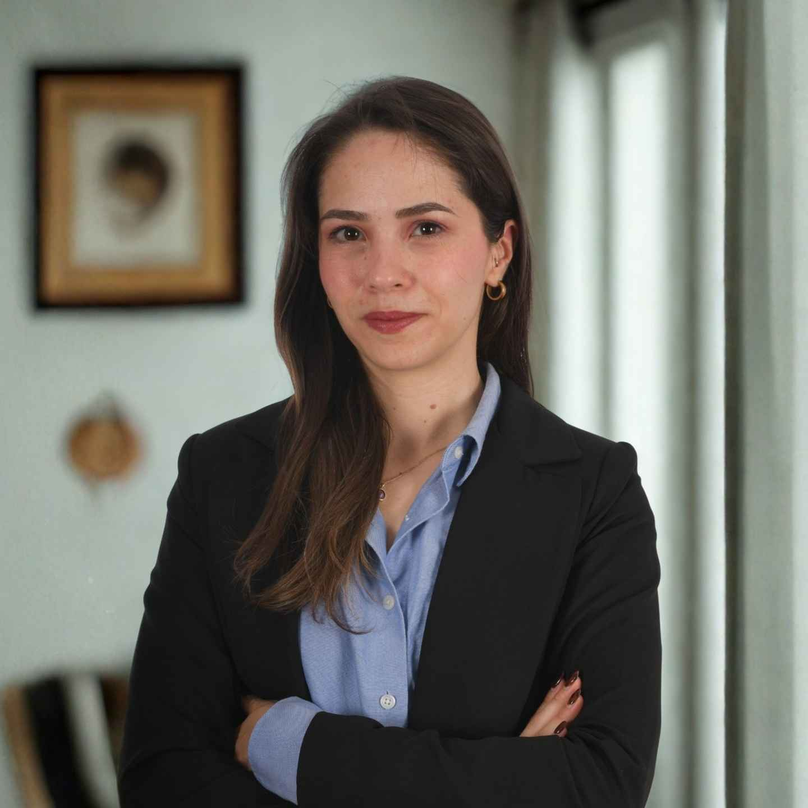
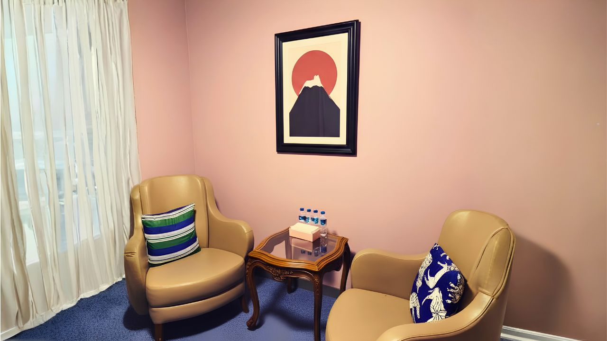

Klinik Psikolog · Ankara
Yetişkinlerle şema terapi odağında çalışıyorum. Zorlandığınız konulara, yargılanma kaygısı olmadan ve kendi hızınızda, birlikte bakıyoruz.
Daha fazlasını öğrenHakkımda
Lisans eğitimimi Orta Doğu Teknik Üniversitesi Psikoloji Bölümü'nde tamamladım. Ardından ODTÜ Gelişim Psikolojisi Yüksek Lisans Programı'ndan mezun oldum; bu süreçte ODTÜ Dil ve Bilişsel Gelişim Laboratuvarı'nda araştırmacı olarak TÜBİTAK destekli projelerde yer aldım.
Klinik psikoloji uzmanlık eğitimimi Başkent Üniversitesi Klinik Psikoloji Yüksek Lisans Programı'nda sürdürüyorum. Mesleki deneyimimi, Ankara Gülhane Eğitim ve Araştırma Hastanesi Psikiyatri Kliniği'nde tamamladığım klinik stajla derinleştirdim.
Danışanlarımı yalnızca yaşadıkları belirtilerle değil; yaşam öyküleri, ilişki deneyimleri ve tekrar eden örüntüleriyle birlikte, bir bütün olarak görmeyi önemsiyorum.
Çalışma Alanları
Her süreç kişiye özeldir; aşağıdaki başlıklar yalnızca danışanlarımla en sık birlikte çalıştığımız temalardan birkaçı.
Görüşmeler
Görüşmelerimizi size en uygun biçimde sürdürebiliriz; hangisinin iyi geleceğine birlikte karar veririz.
Nerede olursanız olun, görüntülü görüşmeyle sürecimize kesintisiz devam edebiliriz.
Ankara'daki Rola Psikoloji ofisinde, sakin ve güvenli bir ortamda buluşuyoruz.

Yaklaşım
Tekrar eden duygu, düşünce ve davranış örüntülerini yargılamadan anlamaya çalışırız — güvene dayalı, sizinle birlikte adım adım ilerleyen bir süreç.
Yaşam öykünüzü, ilişkilerinizi ve şu an sizi zorlayan konuları güvenli bir alanda, kendi hızınızda birlikte ele alırız.
Tekrar eden örüntüleri ve bunları besleyen şemaları birlikte fark eder, nereden geldiklerini anlamlandırırız.
Fark ettiğiniz örüntüleri, ihtiyaçlarınıza daha iyi karşılık veren yeni yollara birlikte dönüştürürüz.
Blog
Şema terapi, duygular ve kendini anlama üzerine düşünceler.
Sık Sorulan Sorular
İletişim
Bir görüşme planlamak ya da aklınızdaki soruları sormak için bana yazabilirsiniz.
İletişime geç